数学系 · 现代算法讨论班 · 2026
聚类算法综述
从 K-means 到谱聚类
四种算法的数学动机、迭代结构与适用边界
K-means · DBSCAN · 层次聚类 · 谱聚类 | 报告时长约 120 分钟
各位学长、各位同学，大家好。今天这场报告的主题是聚类算法的综述，副标题是「从 K-means 到谱聚类」。我会先用一点时间建立聚类的公共语言——定义、距离、评估指标；然后重点讲两块：一是 K-means，包括它的目标函数、E/M 迭代和收敛性，这一块我自己实践过；二是谱聚类，这是今天数学味道最重的部分，会从图割一直推到特征向量。中间的 DBSCAN 和层次聚类我会讲得简略一些，但该有的公式和实测结果都会给全。全场大约一百二十分钟，中间我会留提问时间，最后有一页对比表和应用建议。所有实验数字都来自我本地跑出来的真实结果，不会用编造的数据。
00 · 前言
前言
（本页内容由你撰写）
前言页：内容由我自己撰写。
Agenda · 报告路线
六个板块
先看一下路线。整场分六个板块。第一板块是引入，主要是把语言对齐，大概十五分钟。第二板块 K-means，是今天的第一个重点，我给了八页，会按目标函数、E 步 M 步、收敛性、肘部法则与轮廓系数、三个局限、K-means++ 优化的顺序讲清楚。第三板块 DBSCAN，四页，密度可达那一套概念加上参数敏感性。第四板块层次聚类，两页，凝聚式流程和树状图。第五板块谱聚类，是今天最重的部分，九页，从图割的 NP-hard 出发，一路松弛到特征向量。最后三页是总结，会给出四算法的对比表和选型建议。中途大家随时可以打断提问。
01 · 聚类引入
聚类：定义与无监督学习动机
定义
给定数据集 $X=\{x_1,\dots,x_n\}\subset\mathbb R^d$，聚类是把它划分成 $K$ 个互不相交的子集
$$C_1,\dots,C_K:\quad \bigcup_{k=1}^{K}C_k=X,\qquad C_k\cap C_l=\varnothing\ \ (k\neq l)$$
使得同一簇内样本“相似”，不同簇之间“相异”。
“相似”的具体含义由距离度量与目标函数定义 —— 这正是各算法分歧的起点。
无监督学习的位置
监督学习 ：有标签 $(x_i,y_i)$，最小化预测误差 $\sum_i \ell(f(x_i),y_i)$。无监督学习 ：只有 $X$，没有 $y$；最小化某种“结构”或“相似度”准则。聚类是最基础的无监督任务：不预测某个量，而是发现数据的划分结构 。
它常用于：探索性分析、向量量化、图像分割、社区发现、作为监督任务的特征预处理。
我们从定义开始。给定 n 个 d 维样本，聚类就是把它切成 K 个两两不交、合起来是全集的子集，要求簇内相似、簇间相异。请注意这个「相似」是全场的核心问题：不同算法只是把这个词换成了不同的数学对象——K-means 换成「到中心的平方距离」，DBSCAN 换成「密度连通」，谱聚类换成「图上的边权」。右边对照一下监督学习的位置：监督学习有标签，最小化预测误差；无监督学习没有标签，最小化的是某种结构准则。聚类就是最典型的无监督任务，它不预测某个量，而是发现划分结构。它的典型用途是探索性分析、向量量化、图像分割和社区发现。
01 · 聚类引入
距离度量：欧氏、余弦与马氏
欧氏距离
$$d_2(x,y)=\sqrt{\sum_{j=1}^{d}(x_j-y_j)^2}$$
最常用；对各维度等权，受尺度影响，需先标准化。
余弦距离
$$\cos\theta=\frac{x^\top y}{\lVert x\rVert\lVert y\rVert},\qquad d_{\cos}=1-\cos\theta$$
只看方向不看长度；适合文本、词向量等高维稀疏数据。
马氏距离
$$d_M(x,y)=\sqrt{(x-y)^\top\Sigma^{-1}(x-y)}$$
$\Sigma$ 为协方差矩阵，消除维度间的尺度与相关性。
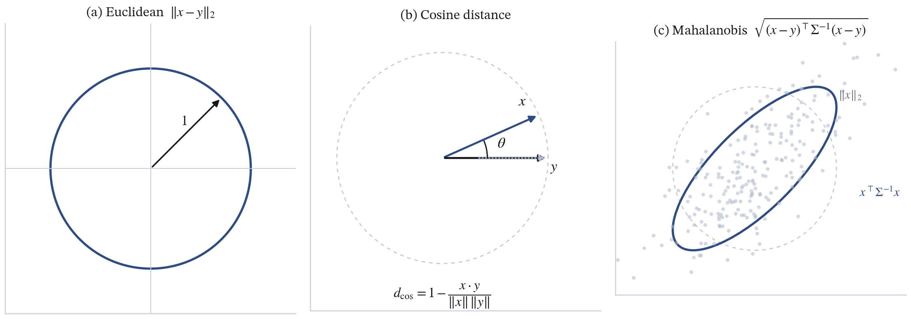
三种度量下的「单位球」：欧氏是圆（各向同性），马氏是白化后的斜置椭圆（按协方差拉伸）——距离的定义直接决定「谁离谁近」。
聚类之前必须先回答「相似」用什么量。三种最常用的：欧氏距离，就是平方差求和再开根号，最常用，但它对各维度等权，所以量纲不同的特征要先标准化。余弦距离，用夹角余弦衡量方向一致性，取 1 减余弦作为距离，它的特点是不看向量长度，只看方向，所以在文本、词向量这类高维稀疏场景里更合适。马氏距离，用协方差矩阵的逆做白化，等于先把数据按协方差拉平，再算欧氏距离，这样既消除尺度差异，也处理维度之间的相关性。下面这张图是三种度量下的单位球：欧氏是标准的圆，马氏是白化之后的斜置椭圆。一句话总结：距离的定义直接决定了算法认为「谁离谁近」。
Section 01
K-means：以目标函数为中心的迭代
一个非凸的组合优化问题，用「分配 — 取均值」两步交替下降来逼近局部最优。
进入第一个重点板块 K-means。我想先给出它的定位：K-means 本质上是一个非凸的组合优化问题——变量既有离散的簇分配，又有连续的中心坐标，所以它是一个混合整数问题。而它的解法非常朴素：分配和取均值两步交替进行，每一步都保证不升高目标函数，于是一路下降到一个局部最优。接下来八页，我会把目标函数、两步迭代、收敛性的三个不等式、肘部法则与轮廓系数、三个局限，最后是 K-means++ 优化，依次讲完。
02 · K-means
K-means 的优化目标
$$J(\mu,C)=\sum_{k=1}^{K}\sum_{x\in C_k}\lVert x-\mu_k\rVert^2$$
给定划分，中心的最优解就是均值
把 $J$ 对 $\mu_k$ 求偏导并令其为零：
$$\frac{\partial J}{\partial \mu_k}=2\sum_{x\in C_k}(x-\mu_k)=0\ \Longrightarrow\ \mu_k=\frac{1}{|C_k|}\sum_{x\in C_k}x$$
所以「K-means」里的 means 不是假设，而是给定划分下的最优中心。
给定中心，分配也无歧义
每个点独立地选最近的中心，$J$ 因此可分解为 $n$ 个独立小问题。
$$J=\sum_{i=1}^{n}\lVert x_i-\mu_{c_i}\rVert^2,\qquad c_i=\arg\min_{k}\lVert x_i-\mu_k\rVert^2$$
但「同时」对 $C$ 与 $\mu$ 优化仍然是 NP-hard：$n$ 个点的 $K$ 划分数量是指数级的。
K-means 的目标函数 J 就是所有点到所属簇中心的距离平方和。这里有一个很关键的结构：把 J 看成两个变量——划分 C 和中心 mu——的函数，只要固定其中一个，另一个的最优解都是闭式的。左栏：固定划分，对 mu_k 求偏导令零，得到 mu_k 等于该簇所有点的均值，这就是「means」这个名字的来源，它不是一个人为假设，而是最优性条件。右栏：固定中心，每个点独立选最近的中心，J 就分解成 n 个互不相关的小问题。但难点在于：如果我们同时要最优的 C 和最优的 mu，这是一个 NP-hard 问题——n 个点切成 K 份的划分数目是指数级的。所以 K-means 的做法是交替优化，退而求其次，接受局部最优。
02 · K-means
E 步与 M 步
E 步（分配 Assignment）
$$c_i\leftarrow\arg\min_{k}\ \lVert x_i-\mu_k^{(t)}\rVert^2$$
固定中心，把每个点重新指派给最近的中心。$O(nKd)$。
M 步（更新 Update）
$$\mu_k^{(t+1)}\leftarrow\frac{1}{|C_k^{(t)}|}\sum_{i\in C_k^{(t)}}x_i$$
固定划分，把中心移到该簇质心。$O(nd)$。
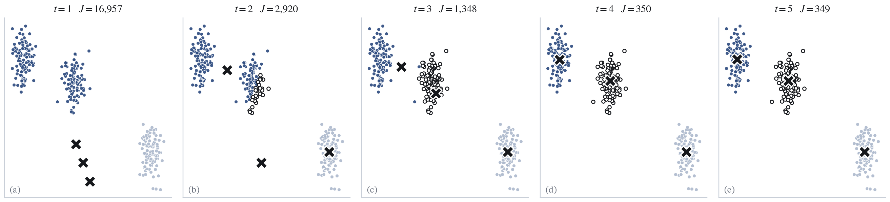
实测迭代（blobs，$n=300$，初值点 $[-1,1],[1,-1],[0,0]$）：$J=16957.14\to2919.61\to1347.90\to350.15\to348.86$，5 步 到达不动点。每轮时间复杂度 $O(nKd)$。
把上一页的两个最优性条件写成算法，就是 E 步和 M 步。E 步，Expectation 或者说分配步，固定当前中心，把每个点重新指派给离它最近的中心，复杂度是 n 乘 K 乘 d。M 步，更新步，固定当前划分，把每个中心移到它那一簇的质心，复杂度是 n 乘 d。两步交替，直到某个点所属的簇不再变化、或者 J 不再下降，就停。下面这张图是我用 blobs 数据真实跑出来的：初值故意取成 [-1,1]、[1,-1]、[0,0]，可以从图上看到第一轮 J 高得离谱，是 16957，第二轮掉到 2919，第三轮 1347，第四轮 350，第五轮 348.86，之后就不动了。整场只需要五步。
02 · K-means — 视频演示
视频：K-means 的迭代过程
02 · K-means
收敛性：单调不增且有下界
$$J(\mu^{(t)},C^{(t)})\ \ge\ J(\mu^{(t+1)},C^{(t)})\ \ge\ J(\mu^{(t+1)},C^{(t+1)})$$
左不等式 ：固定划分 $C^{(t)}$，$\mu^{(t+1)}$ 是每簇的均值，即该子问题的最优解，故不增。右不等式 ：固定中心 $\mu^{(t+1)}$，重新分配只让每个点选择最近中心，故不增。
且 $J\ge 0$ 有下界 $\Rightarrow$ 单调不增有下界必收敛。
更强地：划分只有有限多种，$J$ 取值有限；若某轮不下降则不动点，故有限步内到达不动点。
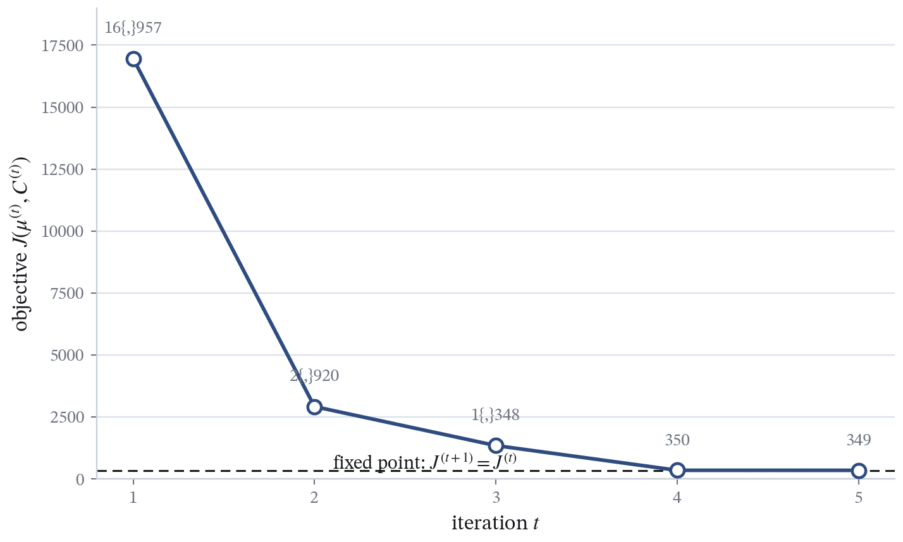
$J$ 随迭代严格不增，到达平台后不再变化 —— 收敛到的是局部最优 。
为什么交替两步一定收敛？看这三个不等式。左边这个不等号：固定上一轮的划分，我们把中心换成每簇的均值，而均值是那个子问题的最优解，所以 J 不会升高。右边这个不等号：固定刚更新的中心，重新分配让每个点选最近的中心，同样 J 不会升高。于是每一轮 J 单调不增。同时 J 是非负的，有下界零。单调不增又有下界，必然收敛。更强的说法是：n 个点的 K 划分只有有限多种，所以 J 只能取有限多个值；如果某一轮 J 没有下降，那一定已经是不动点；因此有限步内必定到达不动点。但要特别强调：这只保证收敛到局部最优，不保证全局最优，图上那个平台可能是很多个局部极小之一。这也是后面要讲 K-means++ 的原因。
02 · K-means
肘部法则：如何选 K
对 $k=1,2,3,\dots$ 各跑一次 K-means，记录 $\mathrm{WCSS}(k)$；
$J(k)$ 必然随 $k$ 单调下降，$k=n$ 时 $J=0$ —— 所以不能取最小 ；
找曲线斜率骤减的拐点（elbow），作为 $K$ 的启发式选择。
实测（blobs，$n=300$）：
$$J(k):\ 18391.16,\ 3068.70,\ \mathbf{348.86},\ 305.04,\ 264.49,\dots$$
从 $k=2$ 到 $k=3$ 下降 88.6%，从 $k=3$ 到 $k=4$ 只下降 12.5% —— 拐点在 $k=3$。
交叉验证：同一数据上轮廓系数也在 $k=3$ 取到最大 0.836。
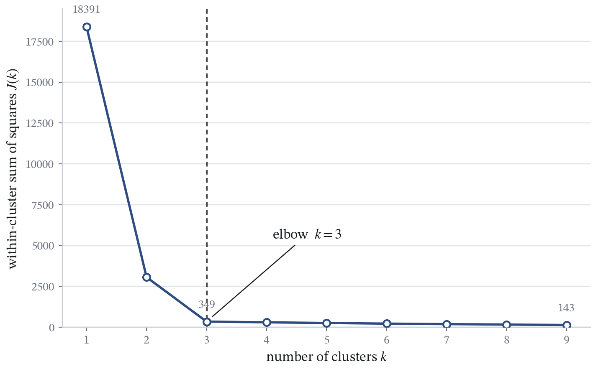
肘部法则：$J(k)$ 在 $k=3$ 处出现明显拐点，与真实簇数一致。
K 怎么选？常用的启发式是肘部法则。做法很简单：对 k 从 1 到某个上限分别跑 K-means，记录 WCSS。注意 WCSS 一定随 k 单调下降，k 取到样本数的时候 J 会变成零，所以绝对不能取最小值。要找的是曲线斜率骤减的那个拐点，也就是「肘部」。实测数字：k 等于 1 时 J 是 18391，k 等于 2 时 3069，k 等于 3 时骤降到 348.86，再往后 k 等于 4 是 305，只降了百分之十二点五。从 2 到 3 降了百分之八十八点六，从 3 到 4 只降百分之十二点五，斜率在这里明显折断，所以拐点是 k 等于 3。这和下一页轮廓系数在同一数据上选出的 k 等于 3 互相印证。要说明的是肘部法只是启发式，不总是清晰可辨。
02 · K-means
评估指标：WCSS 与轮廓系数
簇内平方和 WCSS
$$\mathrm{WCSS}(C)=\sum_{k=1}^{K}\sum_{x\in C_k}\lVert x-\mu_k\rVert^2,\qquad \mu_k=\frac{1}{|C_k|}\sum_{x\in C_k}x$$
越小说明簇越紧凑。它就是 K-means 的目标函数 $J$ —— 因此用 WCSS 评价 K-means 有自证倾向。
轮廓系数 Silhouette
$$s(i)=\frac{b(i)-a(i)}{\max\{a(i),b(i)\}}\in[-1,1]$$
$a(i)$：$i$ 到同簇其他点的平均距离（凝聚度）；$b(i)$：$i$ 到最近邻簇所有点的平均距离（分离度）。整体取平均 $S=\frac1n\sum_i s(i)$，越大越好。
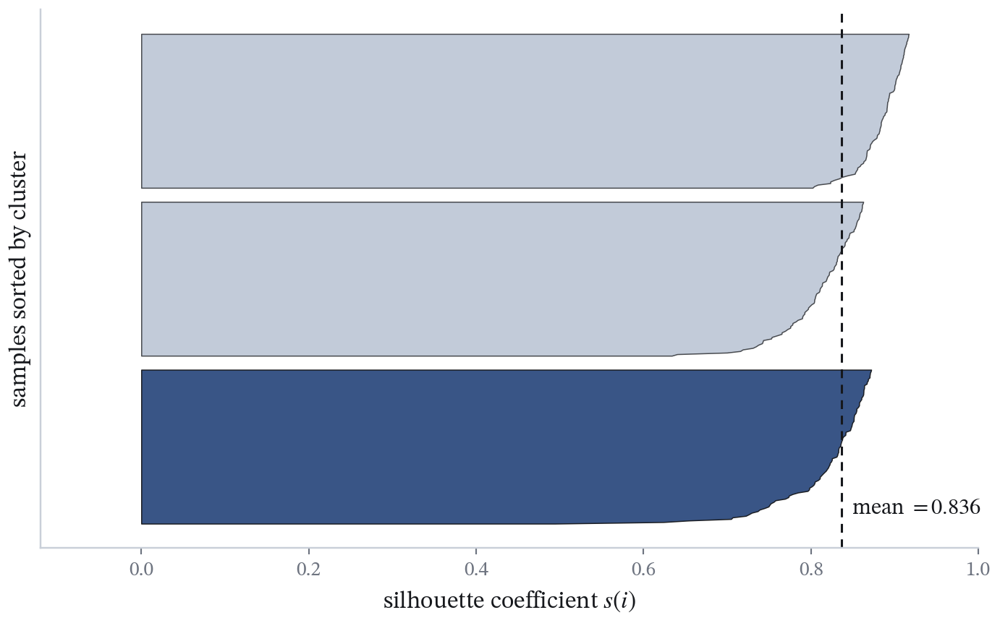
实测（blobs，$n=300$）：$k=2\to0.763$，$k=3\to0.836$，$k=4\to0.676$，$k=3$ 最高。
上一页选 K 用到了 WCSS，这里把两个最常用的内部评估指标正式讲清楚——聚类的评估比分类麻烦，因为没有真实标签。第一个是簇内平方和 WCSS，就是每个点到它所属簇中心的距离平方和，越小越紧凑。要提醒一点：WCSS 恰好就是 K-means 的目标函数，所以用 WCSS 去评价 K-means 结果是有自证倾向的，它能说明优化得好，但不能说明簇分得对。第二个是轮廓系数。对每个点 i，a(i) 是它到同簇其他点的平均距离，衡量凝聚度；b(i) 是它到最近邻簇所有点的平均距离，衡量分离度；两者组合成 s(i)，范围负一到一，越接近一越好，整体取平均。右边是实测：同一个 blobs 数据，k 取 2、3、4 时轮廓系数分别约 0.763、0.836、0.676，k 等于 3 最高，和真实的三簇结构吻合。
02 · K-means
局限：凸球形、初值敏感与预设 K
只适合凸球形簇 最小化平方误差等价于 Voronoi 划分，而 Voronoi 单元是凸的 —— 对同心圆、月牙形这种非凸结构必然失效。
对初始值敏感 实测（$n=300$，$K=3$）：坏初值 $J=1818.36$，好初值 $J=837.62$，比值 $2.17$ —— 同样的算法、同样的数据，只换随机种子。
必须预设 K $K$ 是外部给定的超参数；肘部法则与轮廓系数只是启发式，真实簇数不明确时无法自动决定。
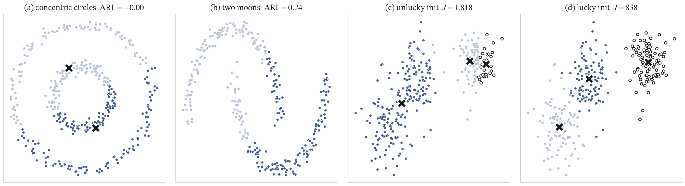
(a) 同心圆 $K=2$，ARI $=-0.00$；(b) 月牙形 $K=2$，ARI $=0.24$；(c) 坏初值 $J=1818$；(d) 好初值 $J=838$。前两幅说明几何形状的限制，后两幅说明初值依赖。
K-means 有三个绕不开的局限。第一，它只适合凸的、球形的、大小相近的簇。原因很本质：最小化平方误差等价于做一个 Voronoi 划分，而 Voronoi 单元一定是凸的，所以像同心圆、月牙这类非凸结构它必然分错。图 (a) 是同心圆，K 取 2，ARI 约等于零，等于随机分；图 (b) 是月牙形，ARI 只有 0.24。第二，它对初值敏感。我特意做了一个实验：同一个数据、同一个 K 等于 3，只换随机种子，坏初值的目标 J 是 1818.36，好初值只有 837.62，差了 2.17 倍。图 (c)(d) 就是这两个结果，可以看到 (c) 里有一个簇被从中间劈开了。第三，K 必须预先给定，而肘部法则和轮廓系数只是启发式。这三点里，初值敏感的问题下一页的 K-means++ 可以直接补救；非凸结构与预设 K 的问题，就要交给后面的 DBSCAN 和谱聚类了。
02 · K-means
K-means++ 初始化
随机选第一个中心；
记 $D(x)$ 为点 $x$ 到已选中心集合 的最近距离；
按与 $D(x)^2$ 成正比的概率抽样下一个中心：
$$P(x)=\frac{D(x)^2}{\sum_{x'}D(x')^2}$$
重复直到选出 $K$ 个中心，再跑标准 K-means。
理论保证：期望目标满足 $\mathbb E[J]\le 8(\ln K+2)\,J_{\text{opt}}$。
直觉：离已有中心越远的点被选中的概率越大，从而中心天然分散。
已选中心 μ₁
远点距离 D 大
(1) 到最近中心的距离 D(x)
(2) 抽样权重 ∝ D²(x)
点 A 点 B
点 C 点 D
远点 E
权重
上一页说的初值敏感，有一个经典的补救：K-means++。一句话概括，让初始中心互相离得远一点。具体做法：第一个中心随机选；然后对每个还没被选中的点，计算它到目前已选中心集合的最近距离，记作 D(x)；接着按正比于 D(x) 平方的概率来抽样下一个中心。注意是平方，不是一次方，平方放大了「远」的优势。重复到选出 K 个中心，再跑标准 K-means。左图是示意：已选中心 mu1 周围画了三圈，离得越远的点 D 越大；右图那几条横条就是抽样权重，最上面那些近的点权重很低，最下面那个远点权重最高，所以它被选中的概率最大。理论上有保证：K-means++ 的初始目标期望不超过 8 倍 ln K 加 2 再乘最优目标。这在实践中非常有效地避免了很差的局部最优。
Section 02
DBSCAN：基于密度的聚类
不问「离中心多远」，而问「周围够不够密」—— 于是簇可以是任意形状，噪声也能被显式标出。
第二个板块 DBSCAN。它换了一个完全不同的视角：不问点到中心有多远，而问一个点周围够不够密。这个视角的代价是需要两个参数，好处是簇的形状可以任意，噪声还可以被显式地标出来。这个板块四页，我只讲核心概念、算法流程、以及它在月牙形数据上的实测效果和它的局限。
03 · DBSCAN
DBSCAN 的核心概念
$$N_\varepsilon(p)=\{\,q\in D:\ d(p,q)\le\varepsilon\,\}$$
核心点 ：$|N_\varepsilon(p)|\ge \mathrm{MinPts}$（含自身）；边界点 ：自身不是核心点，但落在某个核心点的 $\varepsilon$-邻域内；噪声点 ：既不是核心点也不是边界点；密度可达 ：核心点之间通过 $\varepsilon$-邻域的链条传递（直接密度可达的传递闭包）；密度相连 ：两点存在共同的密度可达点 —— 这就是「同一个簇」的定义。
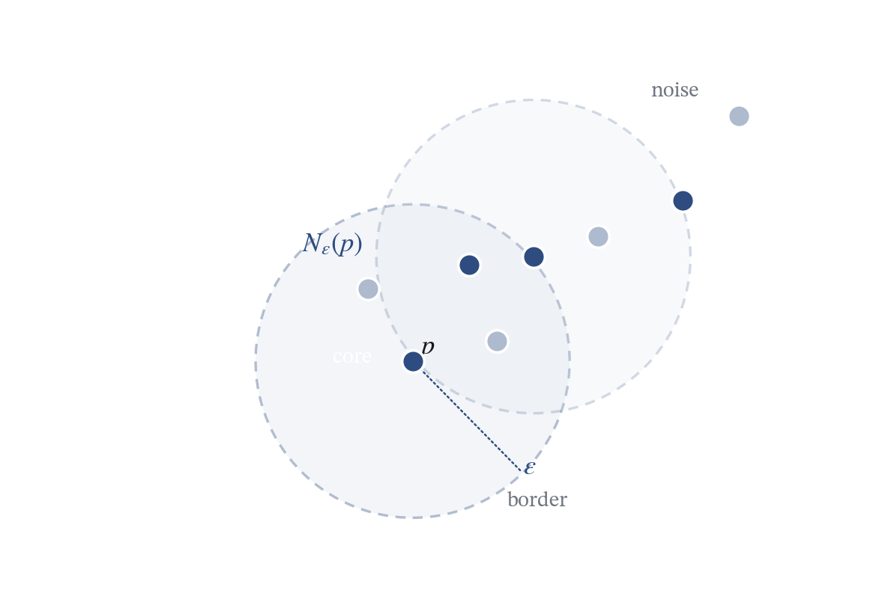
核心点（中心）、边界点、噪声点的区分，以及 $\varepsilon$ 与 MinPts 的几何含义。
先把 DBSCAN 的词汇建立起来。给定半径 epsilon 和最小点数 MinPts。一个点的 epsilon 邻域就是所有和它距离不超过 epsilon 的点。如果这个邻域里的点数不低于 MinPts，它就是核心点。如果它自己不是核心点，但落在某个核心点的邻域里，就是边界点。两者都不是的就是噪声点。然后是两个关键关系：密度可达，指的是从一个核心点出发，通过一串核心点，每一步都落在前一个的 epsilon 邻域里，能走到另一个点；注意它是有方向性的，而且只允许经过核心点。密度相连，指的是两个点存在一个共同的密度可达点。DBSCAN 把「同一个簇」定义为密度相连，这就使得一个簇可以是一条任意弯曲的带子，而不是一个球。右图把这些概念画在了一起。
03 · DBSCAN
算法流程与参数
1
扫描 对每个未访问点 $p$ 计算 $N_\varepsilon(p)$。
2
判定核心 若 $|N_\varepsilon(p)|\ge\mathrm{MinPts}$，新建一个簇并把 $p$ 与其邻域点放入扩展队列。
3
密度扩展 沿密度可达关系（BFS/DFS）不断向外扩展，未归属点标为边界点。
参数敏感 $\varepsilon$ 略大 $\to$ 独立簇被合并；$\varepsilon$ 略小 $\to$ 大量点退化为噪声。MinPts 同理。
复杂度 有空间索引（kd-tree / R-tree）时平均 $O(n\log n)$；无索引或高维时最坏 $O(n^2)$。
算法流程四步。第一步扫描，对每个还没访问过的点算出它的 epsilon 邻域。第二步判定核心，如果邻域点数够，就开一个新簇，把这个点以及邻域里的点全部放进一个扩展队列。第三步密度扩展，从队列里取点，沿着密度可达的关系不断往外扩，遇到没归属的点就吸收进来，并按它是核心点还是边界点分别处理。第四步收尾，所有不属于任何簇的点标成噪声。下面两栏提两个实用要点。第一，参数很敏感：epsilon 稍微大一点，两个本来独立的簇就被粘在一起；稍微小一点，大量点退化成噪声。第二，复杂度取决于有没有空间索引：用 kd-tree 或 R-tree 时平均是 n log n，没有索引或者维度很高时最坏退化到 n 平方。
03 · DBSCAN — 视频演示
视频：DBSCAN 的密度扩展
03 · DBSCAN
效果、优点与局限
优点
不需要预设 $K$，簇的个数由数据决定；
能识别任意形状的簇（非凸）；
显式地把噪声点单独标出，抗噪能力好。
局限
对 $\varepsilon$ 与 MinPts 敏感，调参依赖经验；
各簇密度差异大时，单一 $\varepsilon$ 顾此失彼；
高维退化：距离趋同，$\varepsilon$ 邻域失去区分度。
实测：moons（$n=300$）$\varepsilon=0.19,\ \mathrm{MinPts}=5$ $\to$ 2 簇、0 个噪声、ARI $=1.000$；circles（$n=400$）$\varepsilon=0.145$ $\to$ ARI $=1.000$。
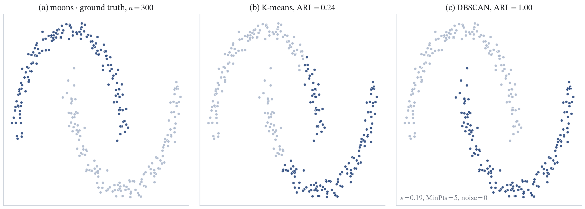
月牙形上 DBSCAN 把两条弯月完整分开（ARI $=1.000$），这是 K-means 做不到的。
来看 DBSCAN 的实测。月牙形数据 300 个点，epsilon 取 0.19，MinPts 取 5，得到 2 个簇、零个噪声点，ARI 是 1.000，也就是完全正确。同心圆 400 个点，epsilon 取 0.145，ARI 也是 1.000。这和 K-means 在同样数据上的表现形成鲜明对比——K-means 在月牙上是 0.24，在同心圆上几乎是零。优点总结三条：不用预设 K，能处理任意形状，能显式处理噪声。局限也三条：参数敏感、密度不均时失效、高维退化。关于高维退化我再多说一句：维度一高，任意两点之间的距离会趋同，epsilon 邻域就失去区分能力，这也是所有基于距离的方法在高维共同的困难。
04 · 层次聚类
凝聚式流程与 linkage
初始：每个点各自成一簇，共 $n$ 个簇；
每步合并距离最近的两个簇；
重复直到只剩一个簇，整个合并过程记录为一棵树。
簇间距离由 linkage 决定：
$$d_{\text{single}}(A,B)=\min_{a\in A,b\in B}d(a,b)$$
$$d_{\text{complete}}(A,B)=\max_{a\in A,b\in B}d(a,b)$$
$$d_{\text{average}}(A,B)=\frac{1}{|A|\,|B|}\sum_{a\in A}\sum_{b\in B}d(a,b)$$
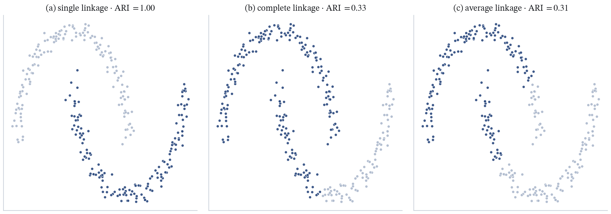
实测（moons，$n=300$，切到 $K=2$）：single ARI $=1.000$（但易「串链」），complete $=0.335$，average $=0.311$。
复杂度：朴素实现 $O(n^2\log n)$；最坏 $O(n^2)$ 级别，且合并不可撤销 。single linkage 对非凸友好，但会被少量「桥接点」串成一条链；complete / average 偏好紧凑的球形簇。
层次聚类我们讲凝聚式，也就是自底向上。一开始每个点自己一簇，一共 n 个簇；每一步把距离最近的两个簇合并；重复到只剩一个簇。整个合并的顺序记下来就是一棵树。关键在于「两个簇之间的距离」怎么定义，这叫 linkage。单链取两簇之间所有点对的最小距离，全链取最大距离，平均链取所有点对的平均。实测在月牙数据上切到 K 等于 2：单链的 ARI 是 1.000，因为单链天然适合非凸形状；但它有个毛病叫串链，只要两个簇之间有少量桥接点，它就会把两个簇连成一条长链，所以 1.000 这里有点运气成分。全链 0.335，平均链 0.311，都不好，因为它们偏好紧凑的球形簇。复杂度方面，朴素实现是 n 平方 log n，而且合并是不可撤销的——一旦合并错，后面无法回头。
04 · 层次聚类
树状图 Dendrogram
树叶是样本，内部节点是合并事件，纵轴是合并时的高度（簇间距离）；
在某一高度 $h$ 水平切一刀，落下的分支就是当时的簇 —— 高度与簇数一一对应；
常用启发式：在相邻合并高度差最大的地方下刀。
一句话总结优缺点：不需预设 $K$、天然给出层级结构 ；但贪心合并不可逆、对离群点敏感、$O(n^2)$ 难以扩展到大规模数据。
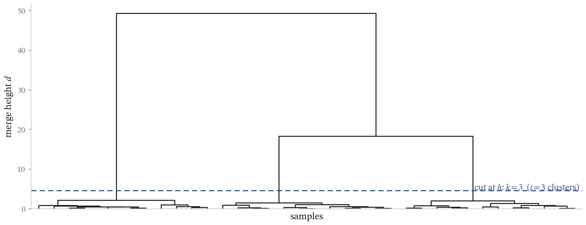
树状图：切割高度决定簇数，最大高度间隙处的切分给出自然的 $K$。
树状图是层次聚类的输出方式。叶子是样本，内部节点代表一次合并，纵轴是合并发生的高度，也就是当时那两个簇的距离。用法很简单：在某个高度水平切一刀，下面落下来的每一个分支就是一个簇。所以切多高就对应多少个簇，高度和簇数是一一对应的。实践中常用的启发式是：找相邻两次合并高度差最大的地方下刀，因为那里说明两个簇即使离得很远也还是被合并了，往往不是我们想要的结果。优点是一句话：不用预设 K，还天然给出层级结构。缺点也一句话：贪心合并不可逆、对离群点敏感、n 平方的复杂度让它很难扩展到大规模数据。所以这一块我们就略过细节，重点放在谱聚类上。
04 · 层次聚类 — 视频演示
视频：层次聚类的合并过程
Section 03
谱聚类：把聚类写成图划分
从图割的 NP-hard，到拉普拉斯矩阵的特征向量 —— 一个漂亮的松弛。
接下来是今天的重头戏，谱聚类。它的思路完全跳出了「距离中心多远」的框架：把数据点看成图的节点，点与点的相似度看成边权，然后把聚类变成一个问题——怎样切图，使得切掉的边权尽量小、而两侧尽量均衡。这个离散的图割问题是 NP-hard 的；谱聚类的漂亮之处在于，它把这个离散问题松弛到连续域，最后归结为一个特征值问题，取几个特征向量就够了。这一段我会尽量把每一步推导的动机讲清楚，但会守住数学边界：特征值我只讲定义，瑞利商只讲直觉。
05 · 谱聚类
动机：K-means 为什么在非凸簇上失效
同心圆数据里，内圈点与外圈点到共同中心的距离差不多 ；
K-means 最小化「到中心」的平方距离，于是把内外圈混在一起分；
实测（circles，$n=400$）：K-means ARI $=-0.002$，Ward 层次 ARI $=0.001$ —— 基本等于随机；
谱聚类换成「点对相似度」：内圈点之间相似度高、与外圈相似度低，环形结构在图上表现为两条几乎不连通的链。
结论：失效的根源是一阶几何 （到中心的距离）不足以刻画非凸结构；需要引入成对相似度 （图结构）。
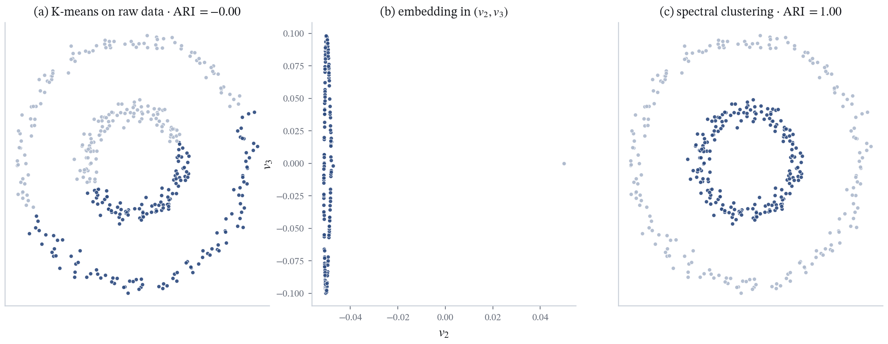
(a) K-means 在原始数据上 ARI $=-0.00$；(c) 谱聚类 ARI $=1.00$ —— 同样的数据，只换了「相似」的定义。
先看一个具体的失败案例，这能解释谱聚类的全部动机。同心圆数据：一个内圈、一个外圈，两个真正的簇。K-means 要最小化点到中心的平方距离，但内圈和外圈的点到共同中心的距离是差不多的，所以它把内外圈混在一起分，完全失败。实测 400 个点，K-means 的 ARI 是负的 0.002，Ward 层次聚类是 0.001，都基本等于随机猜。那谱聚类怎么解决？它不再问「离中心多远」，而是问「这两个点有多像」。内圈的点彼此很像，和任何外圈的点都不像。于是把数据看成一张图之后，内圈是一条首尾相接的链，外圈是另一条，两条链之间几乎没有边相连——图自己就把答案告诉我们了。右边图 (a) 是 K-means 的结果，混成一团；图 (c) 是谱聚类，干净分开。这就是动机。
05 · 谱聚类
先看全景：谱聚类的总流程
3
谱分解 取它的前 $k$ 个特征向量，每个点获得一个 $k$ 维新坐标。
4
在新空间里聚类 对新坐标跑 K-means，得到最终的簇。
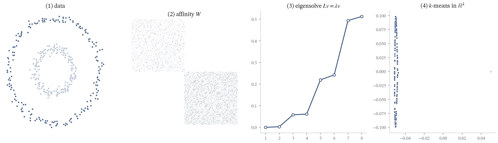
先建立整体印象 —— 接下来几页把每一步的数学逐个拆开，最后再回到这条流水线。
在钻进数学细节之前，先把谱聚类的整条流水线摆出来，让大家心里有一张地图。一共四步：第一步建图，把每个数据点看成节点，点与点的相似度看成边权；第二步算拉普拉斯，从这张图提炼出一个矩阵，它编码了整张图的连接结构；第三步谱分解，取这个矩阵的前 k 个特征向量，每个数据点于是有了一个 k 维的新坐标——这是整个算法的核心，原本纠缠的非凸簇在这个新坐标系里会被拉开；第四步在新空间里跑 K-means，得到最终的簇。注意最后一步用回了 K-means：谱聚类没有抛弃它，而是先用谱嵌入把数据变换到一个「适合 K-means」的空间。下面这张图就是完整的流水线。接下来我会用五页把每一步的数学讲清楚——图模型、拉普拉斯、图割、松弛、瑞利商——然后再回到这条流水线收拢。
05 · 谱聚类
图模型：节点、边与相似度矩阵 $W$
节点 $V$ = 样本 $\{x_1,\dots,x_n\}$；边权 = 相似度，构成无向加权图 $G=(V,E)$；
$$w_{ij}=\exp\!\left(-\frac{\lVert x_i-x_j\rVert^2}{2\sigma^2}\right),\qquad \gamma=\frac{1}{2\sigma^2}$$
$w_{ij}\in(0,1]$，$w_{ij}=w_{ji}$，$w_{ii}=1$；
$\sigma$ 控制「邻域尺度」：$\sigma$ 大 $\to$ 远点也有可观权重；$\sigma$ 小 $\to$ 权重集中在近邻；
实践中常只保留 $k$-近邻或 $\varepsilon$-邻域内的边，把 $W$ 稀疏化以降低代价。
相似度矩阵 $W\in\mathbb R^{n\times n}$ —— 数据被完整编码成一张图。
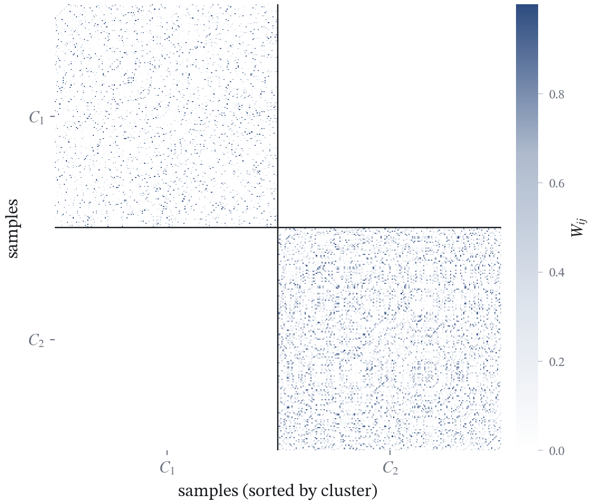
把 $W$ 按真实簇排序后呈块对角 结构：簇内相似度高（深色），簇间几乎为零 —— 图结构已经把簇暴露出来。
第一步，把数据变成图。节点就是样本，边权是两点之间的相似度，整体是一个无向加权图。相似度最常用高斯核，也叫 RBF 核：w_ij 等于 exp 负的「两点距离平方除以二倍 sigma 平方」。它有两个好性质：一是取值永远在零到一之间，自己和自己等于一；二是它只依赖距离，距离越远权重衰减得越快。参数 sigma 控制衰减速度，sigma 大一些远点也有可观权重，sigma 小一些权重就集中在很近的点上，所以 sigma 实际上决定了「多近才算邻居」。实践中为了效率，常常只保留每个点的 k 个最近邻或者半径 epsilon 内的边，把矩阵稀疏化。右边这张热力图是相似度矩阵 W，我特意按真实簇排了序：可以看到明显的块对角结构，两个方块内部是深色、相似度高，方块之间几乎全白、相似度接近零。这就说明图结构已经把簇的结构暴露出来了，剩下的问题只是怎么把它读出来。
05 · 谱聚类
度矩阵 $D$、拉普拉斯矩阵 $L$ 及其性质
$$d_i=\sum_{j=1}^{n}w_{ij},\qquad D=\mathrm{diag}(d_1,\dots,d_n)$$
$$L=D-W$$
度 $d_i$ 是节点 $i$ 的全部连边权重之和，衡量它的「连接强度」。$L$ 是这一节的中心对象。
$L$ 的三条基本性质
对称 ：$L=L^\top$（因 $W$、$D$ 都对称）；半正定 ：$\;f^\top L f=\dfrac12\sum_{i,j}w_{ij}\,(f_i-f_j)^2\ \ge 0$；平凡零特征向量 ：$L\mathbf 1=\mathbf 0$，因为每行和为 $d_i-\sum_j w_{ij}=0$。
重要结论：$L$ 的零特征值重数 等于图的连通分量个数。$f^\top L f$ 小意味着 $f$ 在连边权重大的一对节点上取值接近 —— 这正是「同一个簇」想要的。
接着定义两个矩阵。度矩阵 D 是对角的，第 i 个对角元是节点 i 的所有连边权重之和，衡量这个点的连接强度。拉普拉斯矩阵 L 等于 D 减 W。L 有三条关键性质。第一，对称，因为 W 对称、D 对角，所以 L 等于自己的转置。第二，半正定，有恒等式 f 转置乘 L 乘 f 等于二分之一的「每个边权乘以两端取值之差的平方」求和，显然非负。第三，一向量是零特征向量，因为每一行的和等于 d_i 减去它那一行 W 的和，正好是零。从第三条能推出一个重要结论：零特征值的重数等于图的连通分量个数——如果图是连通的，零特征值就是一重的；如果有两个连通分量，就有两个零特征值。最后注意 f 转置乘 L 乘 f 这个量：它小，说明在连边权重大的一对节点上，f 的取值很接近。这正好就是「同一个簇」想要的——所以后面我们会把它当成优化目标。
05 · 谱聚类
图割问题：RatioCut
把 $V$ 划成 $A_1,\dots,A_k$，希望「切掉的边」尽量少，同时「两块不要一大一小」。
$$\mathrm{cut}(A,\bar A)=\sum_{i\in A,\,j\notin A}w_{ij},\qquad \mathrm{RatioCut}(A_1,\dots,A_k)=\sum_{i=1}^{k}\frac{\mathrm{cut}(A_i,\bar A_i)}{|A_i|}$$
为什么除以 $|A_i|$
不加分母时，最优点会把一个孤立点单独切出来。除以簇的基数 ，就是要求每个块的大小均衡。
归一化变体 Ncut
把分母换成体积 $\mathrm{vol}(A_i)=\sum_{j\in A_i}d_j$：$\ \mathrm{Ncut}=\sum_i\frac{\mathrm{cut}(A_i,\bar A_i)}{\mathrm{vol}(A_i)}$ —— 按度归一化，更能抵抗度分布不均。
无论 RatioCut 还是 Ncut，变量都是「哪些点属于哪一块」，属于离散组合优化。
现在把聚类写成图割。我们把节点集合 V 切成 k 块 A1 到 Ak，希望两个目标同时满足：切掉的边权重尽量小，也就是两块之间联系弱；每块不要太畸形，也就是不要一块特别大一块特别小。cut 就是跨块的边权之和。RatioCut 是在每一块的 cut 上除以这块的节点数。为什么要除以节点数？如果不除，最优解往往是把一个孤立点单独切出来，因为那样 cut 最小，显然不是我们要的；除以基数就是强制每块大小均衡。还有一个常用变体叫 Ncut，归一化割，把分母从节点数换成体积——体积是块内所有节点的度之和——这样按度归一化，对度分布不均的图更稳健。请注意，不管是 RatioCut 还是 Ncut，它的变量都是「哪些点属于哪一块」这种离散的归属关系，所以这是一个离散组合优化问题。
05 · 谱聚类
从 NP-hard 到连续松弛
直接枚举 $n$ 个点的划分是指数级的 —— 最优化 RatioCut 是 NP-hard 。
把「归属」写成指示向量。先以二分割（$A$ 与 $\bar A$）为例：
$$h_i=\begin{cases}\ \ \sqrt{\dfrac{|\bar A|}{|A|}}, & i\in A,\\ -\sqrt{\dfrac{|A|}{|\bar A|}}, & i\in\bar A.\end{cases}\qquad h\in\mathbb R^{n}$$
两个分量一正一负、按块大小加权后恰好抵消：$h^\top\mathbf 1=0$，$h^\top h=n$；
关键恒等式：$\displaystyle \frac{h^\top L h}{h^\top h}=\mathrm{RatioCut}(A,\bar A)$ —— 于是离散问题化为 $\min_{h\perp\mathbf 1}h^\top L h$；
松弛 ：把「$h$ 只由这两个值组成」放松为任意实向量，只保留正交约束 $f\perp\mathbf 1$；$k$ 分割同理：各列按 $1/\sqrt{|A_j|}$ 归一化排成 $H\in\mathbb R^{n\times k}$，则 $\mathrm{RatioCut}=\mathrm{tr}(H^\top L H)$，$H^\top H=I$。
这个比值正是瑞利商 ；在约束 $f\perp\mathbf 1$ 下最小化它，最小值就是 $\lambda_2$ —— 这是下一页要处理的对象。
既然 RatioCut 是 NP-hard，我们就不能硬解，要找一个好的近似。第一步，把「归属」写成指示向量。为了看得清楚，先以二分割为例：把点集分成 A 和它的补集，定义一个 n 维向量 h，落在 A 里的分量取正根号下「补集大小除以 A 的大小」，落在补集里的分量取负根号下「A 的大小除以补集大小」。这个构造是精心设计的：正向和负向按块大小加权之后正好相互抵消，所以 h 与全一向量正交，也就是 h 转置乘 1 等于 0；同时 h 的长度的平方恰好等于 n。第二步是一个很漂亮的恒等式：h 的瑞利商——也就是 h 转置乘 L 乘 h 再除以 h 转置乘 h——正好等于 RatioCut。所以最小化 RatioCut，就等价于在「与全一向量正交」这个约束下最小化 h 转置乘 L 乘 h。第三步是关键的松弛：原来 h 的每个分量只能取那两个特定的值，这个离散约束太强；我们把它放松，允许 f 取任意实向量，只保留正交约束。于是一个离散组合问题就变成了连续优化问题。如果是 k 分割，做法同理：把每一块的指示向量按根号下块大小归一化，按列排成矩阵 H，就得到迹的形式，约束是 H 转置乘 H 等于单位阵。松弛之后的目标是二次型，自然会引向谱——也就是特征值。
05 · 谱聚类
瑞利商：松弛问题的解
$$R(f)=\frac{f^\top L f}{f^\top f}$$
直觉 ：$R(f)$ 是「$L$ 作用在 $f$ 上的能量」再按 $f$ 的长度归一化；$R(f)$ 的极值出现在 $f$ 为 $L$ 的特征向量处（$Lv=\lambda v$，即 $Av=\lambda v$ 的定义），极值就等于对应的特征值；
因此 $\min R(f)=\lambda_{\min}$，而取到它的 $f$ 是最小特征值的特征向量；
扩展到 $k$ 维：$\min_{H^\top H=I}\mathrm{tr}(H^\top L H)$ 的解 = $L$ 的前 $k$ 个最小特征值 对应的特征向量，按列排成 $H$。
数学边界：这里只用到特征值的定义 $Av=\lambda v$，瑞利商的性质只讲直觉，不做证明。
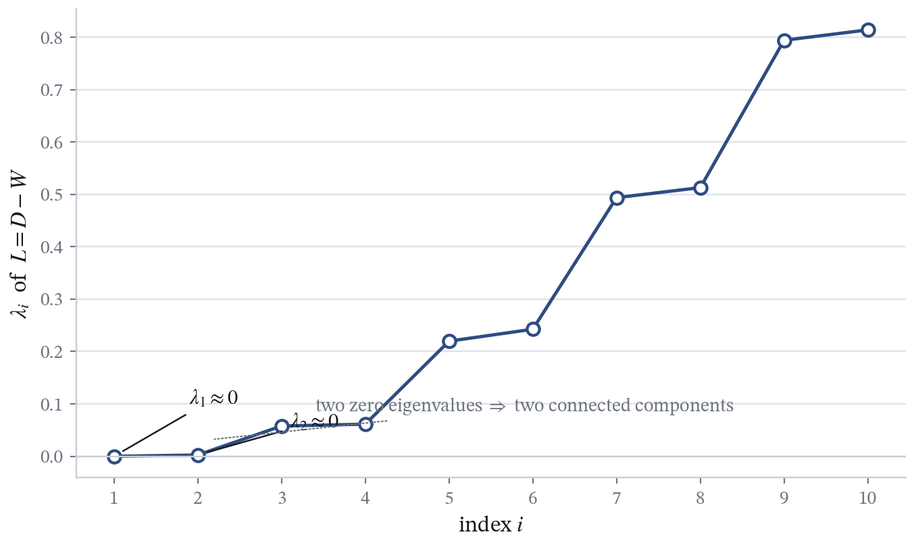
实测（circles，$n=400$，$\sigma=0.12$）：$L$ 的前 8 个特征值 $=0.0,\ 0.0025,\ 0.0578,\ 0.0613,\ \dots$ 前两个 $\approx 0$（两个连通分量），$\lambda_2\to\lambda_3$ 之间有 23 倍跳变 ，取 $k=2$。
这个松弛问题怎么解？答案是瑞利商。瑞利商 R(f) 定义为「f 转置乘 L 乘 f」除以「f 转置乘 f」。直觉上，分子衡量 L 作用在 f 上的能量，分母是 f 的长度平方做归一化，所以它刻画的是「单位向量 f 在 L 上的能量」。核心结论：这个比值的极值出现在 f 取特征向量的时候，而极值恰好等于对应的特征值；最小的那个极值就是最小特征值。这里我只用到特征值的定义——矩阵乘向量等于一个数乘这个向量——不去展开证明，这是我要守住的数学边界。把一维的情形扩展到 k 维，就是取 L 的前 k 个最小特征值对应的特征向量，按列排成矩阵 H，它就是松弛问题的解。右边是实测的谱：同心圆数据 400 个点，sigma 取 0.12，L 的前八个特征值是 0、0.0025、0.0578、0.0613……前两个几乎等于零，说明图有两个连通分量；而第二个和第三个之间有一个 23 倍的跳变，这个跳变就叫谱间隙，它明确地告诉我们 k 应该取 2。
05 · 谱聚类
谱聚类算法：四步流程
1
建图 由相似度 $w_{ij}$ 构造 $W$ 与度矩阵 $D$。
3
谱分解 取 $L$ 前 $k$ 个最小特征值对应的特征向量 $u_1,\dots,u_k$，按列排成 $U\in\mathbb R^{n\times k}$。
4
在 $\mathbb R^k$ 里再聚类 把 $U$ 的每一行当作一个新样本，跑 K-means，得到 $k$ 个簇。
(1) 原始数据 $\to$ (2) 相似度矩阵 $W$（块对角结构显形）$\to$ (3) 特征分解（谱间隙选出 $k$）$\to$ (4) 在 $\mathbb R^k$ 中 K-means。
把所有推导收拢成算法，谱聚类就四步。第一步建图，用高斯核算出相似度，得到 W 和度矩阵 D。第二步算拉普拉斯 L 等于 D 减 W。第三步做谱分解，也就是求 L 的前 k 个最小特征值对应的特征向量，把它们按列排成一个 n 行 k 列的矩阵 U。第四步很有意思：把这个 U 的每一行当成一个 k 维的新样本，对它跑标准 K-means，得到 k 个簇。注意第四步用到 K-means——所以谱聚类并没有抛弃 K-means，而是先用谱嵌入把数据换到一个「更该用 K-means」的空间里，再调用它。下面这四幅图就是整条流水线：从原始数据，到相似度矩阵 W 显出块对角结构，到特征分解给出谱间隙，最后在 R^k 里跑 K-means。这就是谱聚类。顺便说一句，理论上可以证明这一步的松弛解与离散最优解之间有一个二倍近似保证，这里我只提一句，不展开。
05 · 谱聚类
实验对比：K-means 失败与谱聚类成功
数据集 K-means DBSCAN Ward 谱聚类
blobs（3 簇） 1.000 1.000 1.000 1.000 moons（2 簇） 0.241 1.000 0.358 0.960 circles（2 簇） −0.002 1.000 0.001 1.000
指标为 ARI（Adjusted Rand Index，调整兰德指数，越高越好，1 为完全一致）。样本量：blobs 300、moons 300、circles 400。谱聚类在 moons 上 $\sigma=0.22$，circles 上 $\sigma=0.12$。
在球形数据 blobs 上四种方法都对；一旦簇变成非凸，只有基于密度 或图结构 的方法还能保持正确。
(a) K-means ARI $=-0.00$；(b) 在 $(v_2,v_3)$ 嵌入空间里两个簇被拉成两团；(c) 谱聚类 ARI $=1.00$。
这页是四算法在三个数据上的 ARI 对比，全都是我本地真实跑出来的。球形数据 blobs，四种方法全是 1.000，都正确。月牙形 moons：K-means 只有 0.241，Ward 层次聚类 0.358，DBSCAN 1.000，谱聚类 0.960——谱聚类稍微差一点点，是因为它在月牙上对 sigma 更敏感，需要调到 0.22。同心圆 circles：K-means 是负的 0.002，Ward 0.001，DBSCAN 和谱聚类都是 1.000。规律很清楚：数据是球形的时候，四种方法都好；一旦簇变成非凸，只有靠密度或者图结构的方法能撑住。右边的三幅图解释了谱聚类为什么行：图 (a) 是 K-means 在原始空间的失败；图 (b) 是关键——在这个特征向量张成的二维嵌入空间里，原本纠缠在一起的内外两圈被拉成了左右两团，互不重叠；在这个新空间里再跑 K-means，就得到图 (c)，完全正确。
06 · 总结
四种算法对比
指标 K-means DBSCAN 层次聚类 谱聚类
时间复杂度 $O(nKdT)$ $O(n\log n)\sim O(n^2)$ $O(n^2\log n)$ $O(n^3)$（稠密特征分解） 需否预设 $K$ 需要 不需要 不需要（切树可得） 需要 能否处理非凸簇 否 能 取决于 linkage 能 噪声鲁棒性 弱 强（显式标噪声） 弱 中 高维表现 中（宜先降维） 差（距离集中） 中 中（需建图技巧） 确定性 否（依赖初值） 基本确定 确定 基本确定 主要超参 $K$ $\varepsilon$, MinPts linkage、切割高度 $\sigma$, $k$ 典型场景 大样本、球形簇 任意形状、含噪声 层级结构、小样本 非凸、图结构数据
这一页把四种算法放在一起横向对比，八行指标。时间复杂度的差别很关键：K-means 是线性量级乘上 K 乘 d 乘迭代数，最快；DBSCAN 平均 n log n 但最坏 n 平方；层次聚类是 n 平方 log n，而且不能扩展；谱聚类最贵，稠密情况下要做特征分解，是 n 的三次方，所以只适合中小规模。需不需要预设 K：K-means 和谱聚类需要，DBSCAN 和层次聚类不需要。非凸簇：只有 DBSCAN 和谱聚类能处理，层次聚类要看 linkage。噪声鲁棒性：DBSCAN 最强，因为它显式标噪声；K-means 和层次聚类最弱。高维：大家都不好，DBSCAN 最差，因为距离集中效应最致命，所以高维通常要先做降维或者用图结构。确定性：K-means 依赖初值所以不确定，层次聚类是确定的。最后是主要超参和典型场景。我建议大家记住第三行和第二行，这两行最能决定你该选谁。
06 · 总结
选型建议与开放问题
什么数据用什么算法
大样本 + 球形簇 + 已知 $K$ $\to$ K-means（配 K-means++）；任意形状 + 含噪声 + 各簇密度相近 $\to$ DBSCAN；小样本 + 想要层级结构 / 树状图 $\to$ 层次聚类；非凸、图结构、$n$ 不大 $\to$ 谱聚类。
开放问题与延伸方向
归一化谱聚类 ：Ncut 对应随机游走拉普拉斯 $L_{\text{sym}}=I-D^{-1/2}WD^{-1/2}$，对度分布更稳健；大规模谱聚类 ：用 Lanczos、Nyström 近似特征分解，把 $O(n^3)$ 降下来；深度聚类 ：自编码器学表示 + 聚类目标联合优化；自监督 / 对比学习聚类 ：学到的表示本身就是好的聚类结构。
一句收束：K-means 用一阶几何 （到均值的距离），谱聚类用成对相似度 （图结构、二阶信息）—— 两者恰好是聚类这一光谱的两端。
最后一页给选型建议和延伸方向。选型其实就看数据的三件事：规模、形状、噪声。大样本、球形簇、能给定 K，就用 K-means，最好配上 K-means++。任意形状、有噪声、各簇密度又差不多，用 DBSCAN。样本不大、而且你希望看到层级结构或者要画树状图，用层次聚类。非凸、或者数据本身就是图结构、规模又不大，用谱聚类。右边是四个延伸方向：第一，归一化谱聚类，前面提过的 Ncut 对应的是随机游走拉普拉斯，用对称归一化形式，对度分布更稳健，这是实践中最常用的版本；第二，大规模谱聚类的瓶颈在特征分解是 n 三次方，可以用 Lanczos 或者 Nyström 做近似；第三，深度聚类，用自编码器学表示再和聚类目标一起优化；第四，自监督和对比学习那一路，学出来的表示本身自带聚类结构。最后我想留一句话收束：K-means 用的是到均值的一阶几何信息，谱聚类用的是点对相似度，也就是图的二阶结构信息，它们其实处在聚类这一整条光谱的两端。谢谢大家。
谢谢
欢迎提问与讨论
10 · 24 程序员节快乐 —— 愿大家的算法都收敛
聚类算法综述 · 从 K-means 到谱聚类 | 数学系现代算法讨论班 · 2026
报告到这里结束，谢谢大家。接下来的时间交给提问，无论是 K-means 的收敛性、谱聚类里 RatioCut 到松弛那一步的等价关系，还是实验的具体参数，都可以讨论。另外，今天恰逢 10 月 24 日程序员节，祝各位节日快乐——愿大家的算法都收敛。